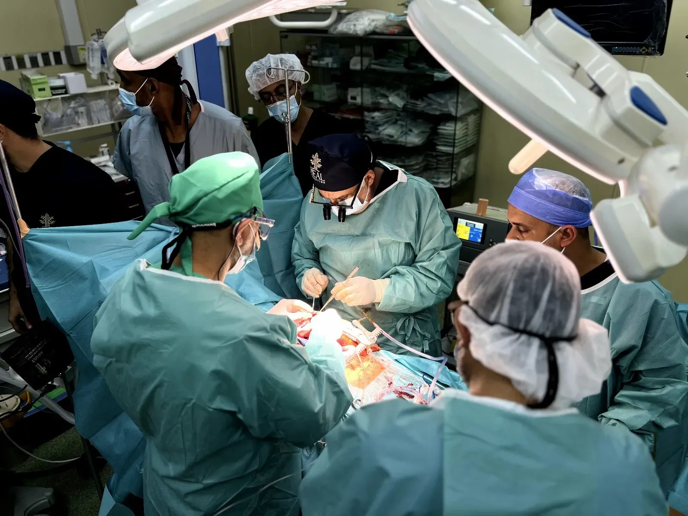
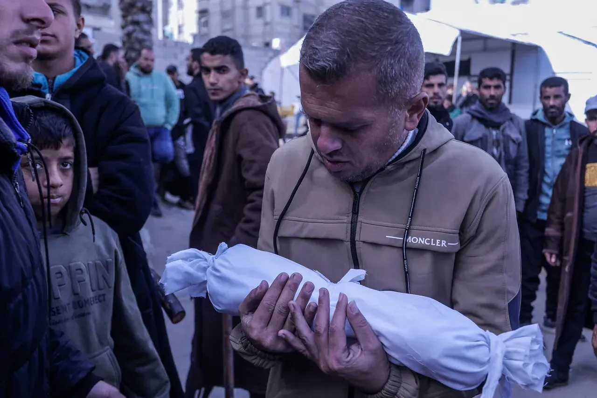
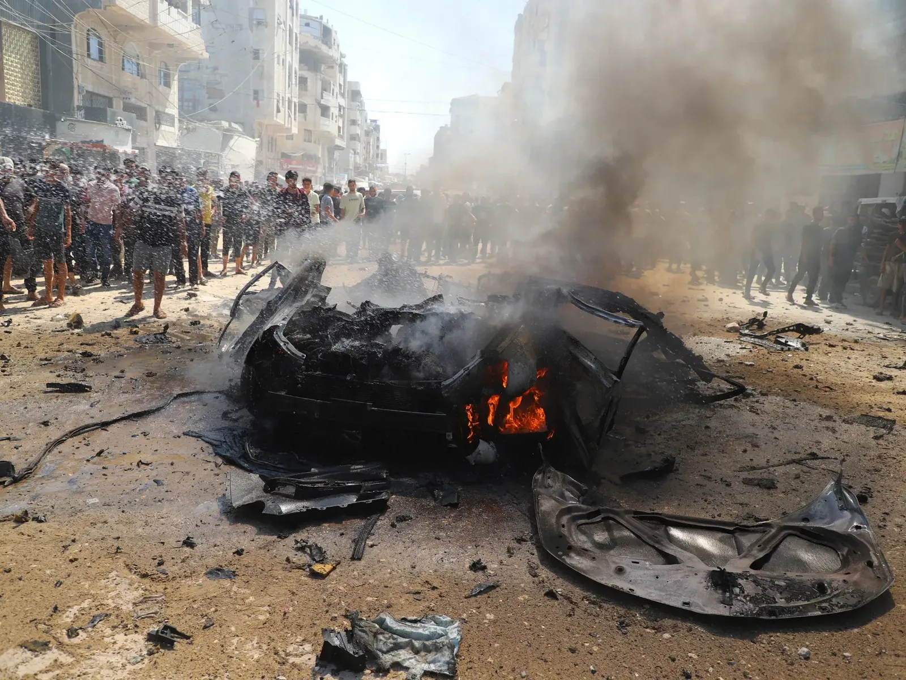
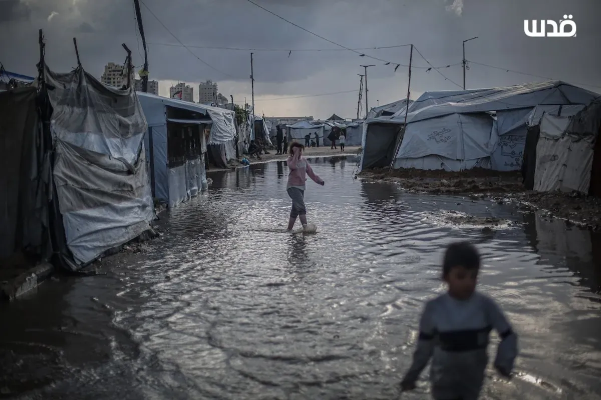
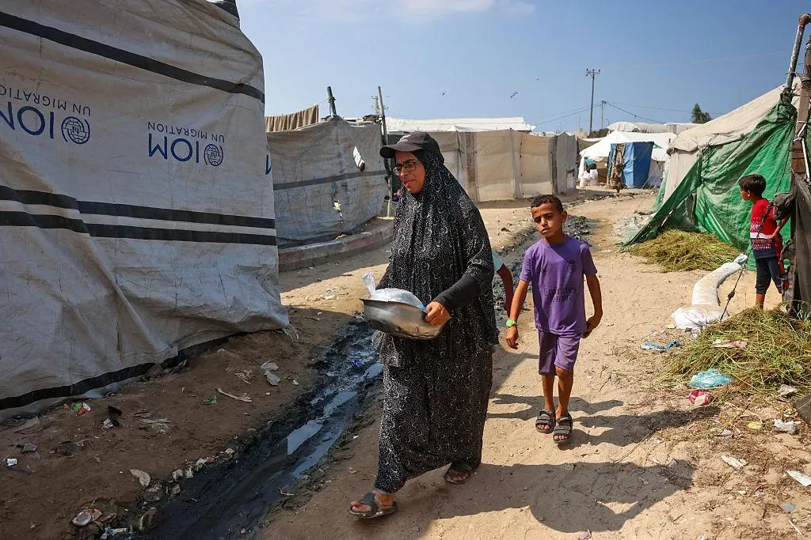

أزمة حادة في القطاع الصحي بغزة.. نفاد الأقمشة الطبية يهدد توقف العمليات الجراحية
نقص المستلزمات يأتي في ظل الحصار المشدد والقيود على إدخال المعدات الطبية.
الوضع الميداني والإنساني في القطاع: القصف، النزوح، والمستشفيات.
10 أخبار في هذه النسخة · آخر تحديث 22:27
نقص المستلزمات يأتي في ظل الحصار المشدد والقيود على إدخال المعدات الطبية.

سقوط ضحايا جدد خلال الساعات الماضية نتيجة القصف الذي طال خان يونس وبيت حانون.




أطلقت قوات الاحتلال النار تجاه مواطنين في مناطق جنوب القطاع، ما أدى إلى إصابة عدة أشخاص بينهم حالات حرجة.

أكدت الأونروا أن 94% من سكان القطاع بحاجة عاجلة للمساعدات في ظل تفاقم الأوضاع واستمرار الحصار.


تقارير ميدانية: ربع أسر القطاع تعيلها نساء، في واقع يعكس أعباء نفسية كبيرة في ظل الحصار.
